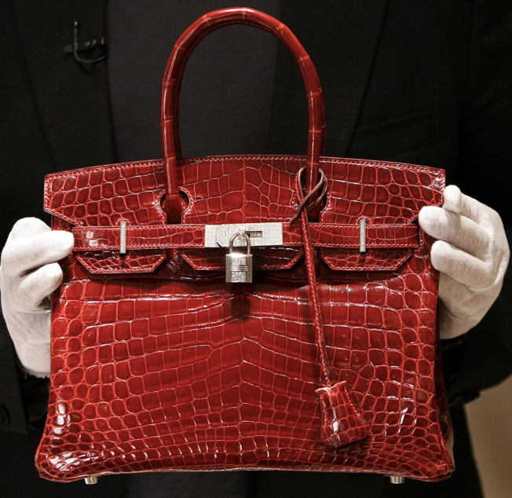

Hermes 2002 26 Bag - $36,000
This beautiful model, available in a statement orange, is made out of matte Mississippiensis alligator skin, one of the staples of the brand. If you dream of possessing one of the priciest bags out there, then this one would be the best option.
Brighton Blue Porosus Crocodile Birkin - $113,525
The coloraturas is stunning, reminding buyers of the blue skies of places like California. Even though it fails to include precious stones and materials, it does feature silvery-white palladium hardware. It's not what the common mortal could afford for a bag, but let's call it one of those "treat yourself moments" in life.
Metallic Bronze Chèvre Leather Hermes Birkin - $117,000
Featuring gold hardware and a stunning orange color, the model ended up being auctioned for $117,000 back in 2017. When it comes to Birkin Bags, you have to think real-estate - the more time goes by after production, the more its worth increases.
Dark Blue Crocodile Skin Birkin - $154,000
This particular model includes, of course, crocodile skin. However, it takes one step further in regards to the ones we previously mentioned in this list. In addition to its main constituent, this bag features white gold and 18-karat diamonds.
Shiny Améthyste Porosus Diamond Birkin - $160,000
This beautiful bag is actually the same model as the Dark Blue Crocodile Skin Birkin we just mentioned. But when it comes to high-fashion, the colour does make a difference after all. This time around, the brand presents us with a gorgeous amethyst color, and, of course, white gold details and 18-karat diamond embellishments
Fuchsia Crocodile Birkin - $222,000
Talk about a statement piece! Even Barbie would be jealous of anyone who was lucky enough to lad this stunning Fuchsia Crocodile Birkin model. But if we're being real here, not even Barbie herself could afford to drop $222,000 for a bag. Even if that bag is bright pink and...oh right, a Birkin!
Blood Red Hermès Braise Shiny Porosus Crocodile Birkin - $298,000
The Blood Red Hermès Braise Birkin includes everything you'd expect from such an exclusive bag. The finest crocodile skin, gold, and diamonds. This is the sort of accessory that exudes opulence and decadence, and it's almost more suitable for a museum than it is to take on an afternoon walk to the park.
Himalaya Niloticus Crocodile Diamond Birkin - $379,000
Only two of these are made every year. Add that to the fact that the piece is made out of Niloticus crocodile skin, over 200 diamonds, and 18-karat gold details, and you can understand why everybody went crazy for it. The Himalaya Niloticus Crocodile Diamond Birkin sold at auction for the staggering price of $379,000 and currently holds the world record for most expensive bag to be sold at auction.
Hermes Birkin Bag By Ginza Tanaka - $1.4 Million
This piece could easily blind an innocent bystander - it includes 2000 diamonds on the outer shell, plus an 8 karat detail that you can actually wear as a brooch. Plus, the diamond sling is detachable and wearable as a bracelet or necklace. We love versatile accessories! We just wish we could buy the $1.4 Million ones.
2012 Sack Bijou Birkin - $1.9 Million
Closing downs this luxurious list is the most expensive Birkin bag known to mankind. With a price-tag of $1.9 MillionCompletely made out of rose gold and encrusted with over two thousand diamonds, this bag alone includes more precious stones than most of us will ever see in our lifetimes. For now, this is the most opulent Birkin to ever be made.